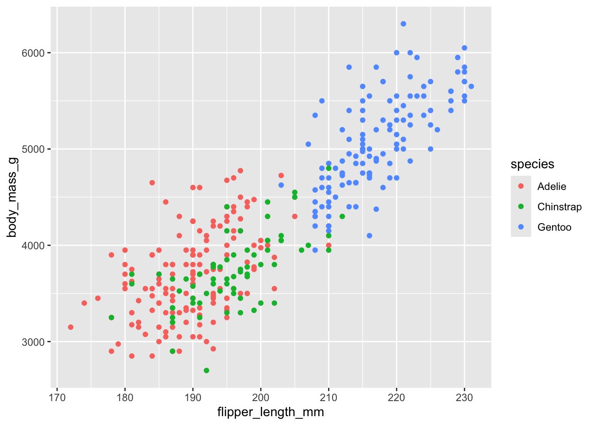

pacman::p_load("tidyverse",
"ggthemes"
)1 Creating a ggplot
#Basics of ggplot2
This chapter focuses on ggplot2, one of the core packages in the tidyverse. Load the tidyverse by running:
We will use penguins data frame. A data frame is a rectangular collection of variables (in the columns) and observations (in the rows). penguins contains 344 observations.
penguins <- read.csv("data/penguins.csv")- For an alternative view, where you can see all variables and the first few observations of each variable, use glimpse(). Or by using view(), you can see the data in a different tab with all information.
glimpse(penguins)Rows: 344
Columns: 9
$ rowid <int> 1, 2, 3, 4, 5, 6, 7, 8, 9, 10, 11, 12, 13, 14, 15, 1…
$ species <chr> "Adelie", "Adelie", "Adelie", "Adelie", "Adelie", "A…
$ island <chr> "Torgersen", "Torgersen", "Torgersen", "Torgersen", …
$ bill_length_mm <dbl> 39.1, 39.5, 40.3, NA, 36.7, 39.3, 38.9, 39.2, 34.1, …
$ bill_depth_mm <dbl> 18.7, 17.4, 18.0, NA, 19.3, 20.6, 17.8, 19.6, 18.1, …
$ flipper_length_mm <int> 181, 186, 195, NA, 193, 190, 181, 195, 193, 190, 186…
$ body_mass_g <int> 3750, 3800, 3250, NA, 3450, 3650, 3625, 4675, 3475, …
$ sex <chr> "male", "female", "female", NA, "female", "male", "f…
$ year <int> 2007, 2007, 2007, 2007, 2007, 2007, 2007, 2007, 2007…view(penguins)Let’s recreate this plot step-by-step.
With ggplot2, you begin a plot with the function ggplot(), defining a plot object that you then add layers to. The first argument of ggplot() is the dataset to use in the graph and so ggplot(data = penguins) creates an empty graph that is primed to display the penguins data, but since we haven’t told it how to visualize it yet, for now it’s empty. This is not a very exciting plot, but you can think of it like an empty canvas you’ll paint the remaining layers of your plot onto.
ggplot(data = penguins)
Next, we need to tell ggplot() how the information from our data will be visually represented. The mapping argument of the ggplot() function defines how variables in your dataset are mapped to visual properties (aesthetics) of your plot. The mapping argument is always defined in the aes() function, and the x and y arguments of aes() specify which variables to map to the x and y axes. For now, we will only map flipper length to the x aesthetic and body mass to the y aesthetic. ggplot2 looks for the mapped variables in the data argument, in this case, penguins.
The following plot shows the result of adding these mappings.
ggplot(
data = penguins,
mapping = aes(x = flipper_length_mm, y = body_mass_g)
)
Our empty canvas now has more structure – it’s clear where flipper lengths will be displayed (on the x-axis) and where body masses will be displayed (on the y-axis). But the penguins themselves are not yet on the plot. This is because we have not yet articulated, in our code, how to represent the observations from our data frame on our plot.
To do so, we need to define a geom: the geometrical object that a plot uses to represent data. These geometric objects are made available in ggplot2 with functions that start with geom_. People often describe plots by the type of geom that the plot uses. For example, bar charts use bar geoms (geom_bar()), line charts use line geoms (geom_line()), boxplots use boxplot geoms (geom_boxplot()), scatterplots use point geoms (geom_point()), and so on.
ggplot(
data = penguins,
mapping = aes(x = flipper_length_mm, y = body_mass_g)
) +
geom_point()Warning: Removed 2 rows containing missing values (`geom_point()`).
Now we have something that looks like what we might think of as a “scatterplot”. It doesn’t yet match our “ultimate goal” plot.
We’re seeing the warning message because there are two penguins in our dataset with missing body mass and/or flipper length values and ggplot2 has no way of representing them on the plot without both of these values.
Let’s incorporate species into our plot and see if this reveals any additional insights into the apparent relationship between these variables. We will do this by representing species with different colored points.
ggplot(
data = penguins,
mapping = aes(x = flipper_length_mm, y = body_mass_g, color = species)
) +
geom_point()
Now let’s add one more layer: a smooth curve displaying the relationship between body mass and flipper length.
Since this is a new geometric object representing our data, we will add a new geom as a layer on top of our point geom: geom_smooth(). And we will specify that we want to draw the line of best fit based on a linear model with method = “lm”.
ggplot(
data = penguins,
mapping = aes(x = flipper_length_mm, y = body_mass_g, color = species)
) +
geom_point() +
geom_smooth(method = "lm")When aesthetic mappings are defined in ggplot(), at the global level, they’re passed down to each of the subsequent geom layers of the plot. However, each geom function in ggplot2 can also take a mapping argument, which allows for aesthetic mappings at the local level that are added to those inherited from the global level. Since we want points to be colored based on species but don’t want the lines to be separated out for them, we should specify color = species for geom_point() only.
ggplot(
data = penguins,
mapping = aes(x = flipper_length_mm, y = body_mass_g)
) +
geom_point(mapping = aes(color = species)) +
geom_smooth(method = "lm")It’s generally not a good idea to represent information using only colors on a plot, as people perceive colors differently due to color blindness or other color vision differences. Therefore, in addition to color, we can also map species to the shape aesthetic.
ggplot(
data = penguins,
mapping = aes(x = flipper_length_mm, y = body_mass_g)
) +
geom_point(mapping = aes(color = species, shape = species)) +
geom_smooth(method = "lm")
And finally, we can improve the labels of our plot using the labs() function in a new layer. Some of the arguments to labs() might be self explanatory: title adds a title and subtitle adds a subtitle to the plot. Other arguments match the aesthetic mappings, x is the x-axis label, y is the y-axis label, and color and shape define the label for the legend. In addition, we can improve the color palette to be colorblind safe with the scale_color_colorblind() function from the ggthemes package.
ggplot(
data = penguins,
mapping = aes(x = flipper_length_mm, y = body_mass_g)
) +
geom_point(aes(color = species, shape = species)) +
geom_smooth(method = "lm") +
labs(
title = "Body mass and flipper length",
subtitle = "Dimensions for Adelie, Chinstrap, and Gentoo Penguins",
x = "Flipper length (mm)", y = "Body mass (g)",
color = "Species", shape = "Species"
) +
scale_color_colorblind()As we move on from these introductory sections, we’ll transition to a more concise expression of ggplot2 code. So far we’ve been very explicit, which is helpful when you are learning:
Expression 1:
ggplot(
data = penguins,
mapping = aes(x = flipper_length_mm, y = body_mass_g)
) +
geom_point()
Typically, the first one or two arguments to a function are so important that you should know them by heart. The first two arguments to ggplot() are data and mapping, in the remainder of the book, we won’t supply those names. That saves typing, and, by reducing the amount of extra text, makes it easier to see what’s different between plots.
Expression 2:
ggplot(penguins, aes(x = flipper_length_mm, y = body_mass_g)) +
geom_point()
We can also use the pipe, |>, which will allow you to create that plot.
Expression 3:
penguins |>
ggplot(aes(x = flipper_length_mm, y = body_mass_g)) +
geom_point()